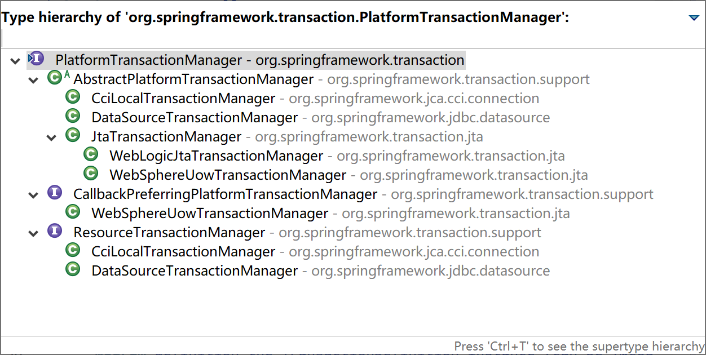

6.2 事务的使用
Java EE中访问数据的技术众多，包含了从最基础的JDBC到各种方便快捷的ORM技术，如JTA、Hibernate、MyBatis等。Spring面对众多的数据访问技术，在事务管理API上定义了一个抽象的PlatformTransactionManager接口来隔离事务底层的复杂性，让应用程序开发人员不需要了解底层的事务API就可以得心应手的使用事务管理机制。
Spring在PlatformTransactionManager接口上提供了几类常用的事务管理器：
- DataSourceTransactionManager
- CciLocalTransactionManager
- JtaTransactionManager
- WebLogicJtaTransactionManager
- WebSphereUowTransactionManager

我们经常用的MyBatis，通常都是使用的DataSourceTransactionManager这个事务管理器。
<bean id="transactionManager" class="org.springframework.jdbc.datasource.DataSourceTransactionManager">
<property name="dataSource" ref="dataSource" />
</bean>
6.2.1 编程式事务
编程式事务是指程序员通过程序代码，明确的控制事务的提交、撤回操作，整个过程非常繁杂。现在已经很少使用了，你可能会在一些遗留系统中看到这种用法。
例如下面的“转账”原生JDBC事务代码片段，在Spring出现之前，我们经常用到这样的方式来管理事务。
Connection con = null;
try{
con = JdbcUtils.getConnection();
con.setAutoCommit(false);
AccountDao dao = new AccountDao();
dao.updateBalance(con,from,-money); //给from减去相应金额
dao.updateBalance(con,to,+money); //给to加上相应金额
con.commit(); //提交事务
} catch (Exception e) {
try {
con.rollback(); //事务回滚
} catch (SQLException e1) {
e.printStackTrace();
}
throw new RuntimeException(e);
}
Spring当然支持编程式事务（虽然强烈不推荐），但也提供了相应的封装。你可以使用TransactionTemplate或者底层的PlatformTransactionManager。对于编程式事务管理，Spring推荐使用TransactionTemplate。
参考如下“转账”代码片段，了解Spring是如何使用TransactionTemplate对编程式事务提供支持的。
@Autowired
TransactionTemplate transactionTemplate;
@Autowired
AccountDao dao;
...
//开启“转账”事务
boolean result = transactionTemplate.execute(new TransactionCallback<Boolean>() {
@Override
public Boolean doInTransaction(TransactionStatus status) {
try {
dao.updateBalance(con,from,-money); //给from减去相应金额
dao.updateBalance(con,to,+money); //给to加上相应金额
} catch (Exception e) {
status.setRollbackOnly();
logger.error(e.getMessage(), e);
return false;
}
return true;
}
});
使用PlatformTransactionManager方式的转账”代码片段如下：
@Autowired
PlatformTransactionManager transactionManager;
@Autowired
AccountDao dao;
...
DefaultTransactionDefinition def = new DefaultTransactionDefinition();//定义事务
def.setReadOnly(false);
def.setIsolationLevel(TransactionDefinition.ISOLATION_READ_COMMITTED);//隔离级别
def.setPropagationBehavior(TransactionDefinition.PROPAGATION_REQUIRED);//传播策略
TransactionStatus status = transactionManager.getTransaction(def);
try {
dao.updateBalance(con,from,-money); //给from减去相应金额
dao.updateBalance(con,to,+money); //给to加上相应金额
transactionManager.commit(status);//提交事务
} catch (Exception e) {
transactionManager.rollback(status);//回滚事务
throw new RuntimeException(e);
}
6.2.2 声明式事务
声明式事务是建立在AOP之上的。其本质是对方法前后进行拦截，然后在目标方法开始之前创建或者加入一个事务，在执行完目标方法之后根据执行情况提交或者回滚事务。声明式事务最大的优点就是不需要通过编程的方式管理事务，这样就不需要在业务逻辑代码中掺杂事务管理的代码，只需在配置文件中做相关的事务规则声明（或通过基于@Transactional注解的方式），便可以将事务规则应用到业务逻辑中。
事务是典型的切面，声明式事务也是AOP的一个典型应用。
显然声明式事务管理要优于编程式事务管理，这正是Spring倡导的非侵入式的开发方式。声明式事务管理使业务代码不受污染，一个普通的POJO对象，只要加上注解就可以获得完全的事务支持。
声明式事务管理有两种常用的方式，一种是基于tx和aop名字空间的xml配置文件，另一种就是基于@Transactional注解。显然基于注解的方式更简单易用，更清爽。
下面，以我们常用的MyBatis环境为例，说明声明式事务是如何使用的。
xmlns:tx="http://www.springframework.org/schema/tx"
...
<tx:annotation-driven transaction-manager="transactionManager"/>
<bean id="sqlSessionFactory" class="org.mybatis.spring.SqlSessionFactoryBean">
<property name="dataSource" ref="dataSource" />
<property name="configLocation">
<value>classpath:mybatis-config.xml</value>
</property>
</bean>
<bean id="transactionManager" class="org.springframework.jdbc.datasource.DataSourceTransactionManager">
<property name="dataSource" ref="dataSource" />
</bean>
<!--dataSource配置略-->
MyBatis自动参与到Spring事务管理中，无需额外配置，只要org.mybatis.spring.SqlSessionFactoryBean引用的数据源与DataSourceTransactionManager引用的数据源一致即可。
基于注解的事务管理，只需要在需要事务的类或方法上添加 @Transactional 注解即可。
当作用于类上时，该类的所有 public 方法将都具有该类型的事务属性，同时，我们也可以在方法级别使用该注解来覆盖类级别的定义。
@Transactional 注解应该只被应用到 public 方法上，这是由 Spring AOP 的本质决定的。如果你在 protected、private 或者默认可见性的方法上使用 @Transactional 注解，这将被忽略，也不会抛出任何异常。
Spring在很早以前，也提供配置扫描匹配的方式使用事务，例如如下配置xml片段。
<tx:advice id="txAdvice" transaction-manager="transactionManager">
<tx:attributes>
<tx:method name="update*" propagation="REQUIRED" read-only="false" rollback-for="java.lang.Exception"/>
<tx:method name="insert" propagation="REQUIRED" read-only="false"/>
</tx:attributes>
</tx:advice>
<aop:config>
<aop:pointcut id="txService" expression="execution (* com.example.service.*(..))"/>
<aop:advisor advice-ref="txAdvice" pointcut-ref="txService"/>
</aop:config>
上面配置中的txAdvice配置了事务需要添加到哪些方法上去，并为其指定了事务的传播策略（当然，也可以为其定义事务隔离级别）为REQUIRED。txService切面定义了在哪些包下的类需要应用这个切面。第10行的advisor，将切面和事务方法结合起来，这样，Spring将对com.example.service包下的所有类上的update开头的方法使用REQUIRED事务管理，使用数据库默认的事务隔离配置（Spring默认使用数据库的事务隔离级别）。
6.2.3 类级别事务
在类上使用 @Transactional(propagation=Propagation.REQUIRED,isolation=Isolation.DEFAULT,readOnly=true)注解，表示这个类中的所有public方法都需要事务支持。事务传播策略为REQUIRED，事务隔离级别为DEFAULT。
通常，事务标注在服务层类上面。比如下面代码片段中的UserService类。
@Service
@Transactional(readOnly = true)
public class UserService {
...
6.2.4 方法级事务
方法级事务标注，同样使用@Transactional(propagation=Propagation.REQUIRED,isolation=Isolation.DEFAULT,readOnly=true)注解，并且方法级注解会覆盖类级别注解配置。也就是说方法级事务标注优先于类级别事务标注。
比较常见的一种做法是，在方法级事务标注上使用读写事务。比如下面代码片段中的saveUser方法。
@Service
@Transactional(readOnly = true)
public class UserService {
@Autowired
UserMapper userMapper;
...
@Transactional(propagation=Propagation.REQUIRED,isolation=Isolation.DEFAULT,readOnly=false)
public void saveUser(User user) {
userMapper.saveUser(user);
}
}
6.2.5 Spring Boot中使用事务
Spring Boot为事务的使用做了极大的简化，默认对JDBC、JPA、MyBatis开启了事务管理。
Spring Boot中自动配置事务管理的类是TransactionAutoConfiguration，其依赖于JtaAutoConfiguration、HibernateJpaAutoConfiguration、DataSourceTransactionManagerAutoConfiguration、Neo4jDataAutoConfiguration等。
@Configuration(proxyBeanMethods = false)
@ConditionalOnClass(PlatformTransactionManager.class)
@AutoConfigureAfter({ JtaAutoConfiguration.class, HibernateJpaAutoConfiguration.class,
DataSourceTransactionManagerAutoConfiguration.class, Neo4jDataAutoConfiguration.class })
@EnableConfigurationProperties(TransactionProperties.class)
public class TransactionAutoConfiguration {
...
我们查看DataSourceTransactionManagerAutoConfiguration可以看到其开启了对声明式事务的支持。
@Configuration(proxyBeanMethods = false)
@ConditionalOnClass({ JdbcTemplate.class, PlatformTransactionManager.class })
@AutoConfigureOrder(Ordered.LOWEST_PRECEDENCE)
@EnableConfigurationProperties(DataSourceProperties.class)
public class DataSourceTransactionManagerAutoConfiguration {
@Configuration(proxyBeanMethods = false)
@ConditionalOnSingleCandidate(DataSource.class)
static class DataSourceTransactionManagerConfiguration {
@Bean
@ConditionalOnMissingBean(PlatformTransactionManager.class)
DataSourceTransactionManager transactionManager(DataSource dataSource,
ObjectProvider<TransactionManagerCustomizers> transactionManagerCustomizers) {
DataSourceTransactionManager transactionManager = new DataSourceTransactionManager(dataSource);
transactionManagerCustomizers.ifAvailable((customizers) -> customizers.customize(transactionManager));
return transactionManager;
}
}
}
所以，我们在Spring Boot中使用MyBatis时，就已经支持声明式事务了。
在实际工作中，只需要在类或方法上使用@Transactional(propagation=Propagation.REQUIRED,isolation=Isolation.DEFAULT,readOnly=true)注解就可以委托Spring来管理事务了。
例如如下“用户”服务的类，使用@Transactional注解就能完成所有的事务管理工作。
package com.example.mybatis.service;
import java.util.List;
import org.springframework.beans.factory.annotation.Autowired;
import org.springframework.stereotype.Service;
import org.springframework.transaction.annotation.Isolation;
import org.springframework.transaction.annotation.Propagation;
import org.springframework.transaction.annotation.Transactional;
import com.example.mybatis.entity.User;
import com.example.mybatis.mapper.UserMapper;
@Service
@Transactional(readOnly = true)
public class UserService {
@Autowired
UserMapper userMapper;
public User selectUser(int id){
return userMapper.selectUser(id);
}
public List<User> selectAllUsers(){
return userMapper.selectAllUsers();
}
@Transactional(propagation=Propagation.REQUIRED,isolation=Isolation.DEFAULT,readOnly=false)
public void saveUser(User user) {
userMapper.saveUser(user);
}
}
6.2.6 事务使用最佳实践
在实际项目中，事务是切面到服务层（服务类的服务方法，其中包含了具体的业务逻辑）上。所有的服务编排，都应该在服务层完成：原子服务是一个方法，组合服务也是一个方法。
- 不允许将@Transactional标注到DAO上；
- 不允许将@Transactional标注到Controller上；
- Controller中的handler方法中，只允许调用一个Service方法；
- 绝对不允许在Controller中的handler方法中编排服务，因为编排服务本身就是业务逻辑，属于服务层。
本小节示例项目代码：
https://github.com/gyzhang/SpringBootCourseCode/tree/master/spring-boot-transaction